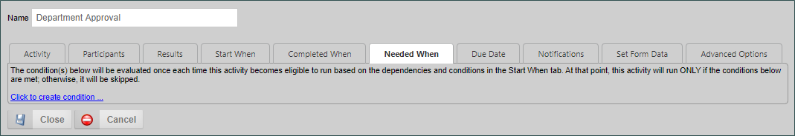
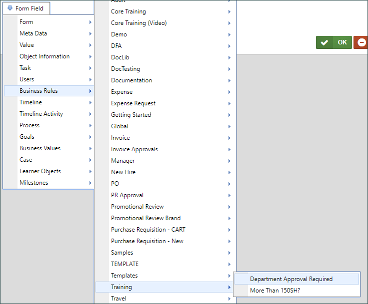
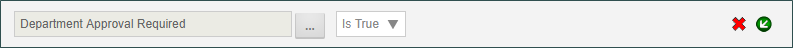
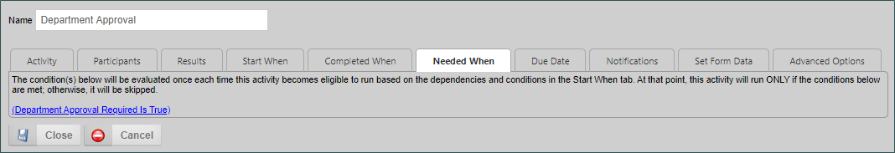
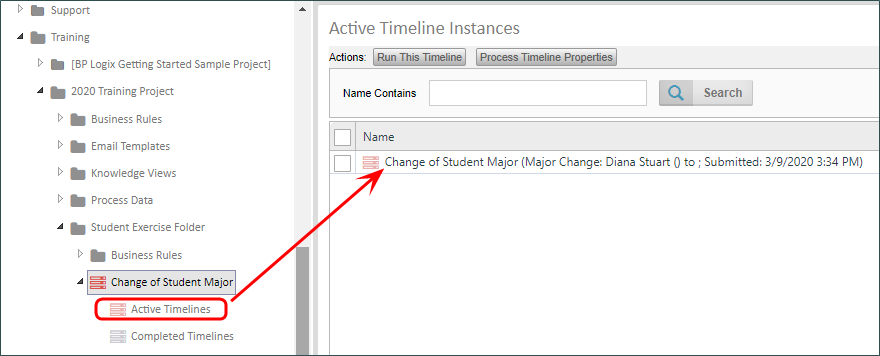
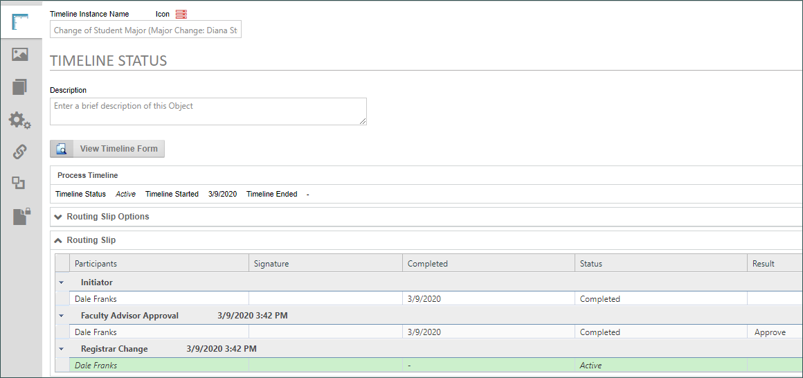

|
|
Lesson Contents | In this Lesson, we will discuss how to apply Business Rules in an application. |
As mentioned previously, we want to ensure that the Department Approval activity in our Process Timeline only fires when the Department Approval Required Checkbox on our form is checked. In order to that, let's edit our Process Timeline to use the Business Rule we created in our last lesson.
Open the Change of Student Major Process Timeline for editing in the Content List. by clicking on the name of the Timeline. Once the Timeline opens, open the Properties dialog box for the Department Approval activity. Once it opens, navigate to the Needed When tab.

The Needed When tab is where we set the necessity conditions for an activity in cases like this, where we only want the activity to run when a condition applies. If the condition doesn't apply, the activity will be skipped, and the process will simply move to the next step that is eligible to run. We will apply the Department Approval Required business rule to serve as our Needed When condition for this activity.
Let's click the Click to create condition... link to open the Condition Builder. Once it opens, we’ll click the Add Condition button to add the condition row we need to configure. In the condition row, click the Object Picker’s build button ( ) to open the Choose System Variable dialog box. From the button menu dropdown, select Business Rules, Training, then Department Approval Required.
) to open the Choose System Variable dialog box. From the button menu dropdown, select Business Rules, Training, then Department Approval Required.

Once you have done so, the button menu will close, and you can click the OK button to close the dialog box. Now, the Object Picker should display the Business Rule, and the Operator dropdown should display “Is True”.

Our condition is now configured, so we can click the OK button to close the Condition builder and save our configuration. Now, the Condition link displayed in the Needed When tab should display as “Department Approval Required Is True”.

We have now configured the Activity to run only when the Department Approval Required checkbox is checked on the form. We can now save our changes and close the Process Timeline definition by clicking the Close button on the Properties dialog box, then clicking the OK menu button at the top right corner of the screen.
Let’s check our work by running the form from the Content List, and walking through the process. Click the check box next to the form name in the content list, then click the Run button to start the form instance.

When the form opens, we can fill it out, ensuring that we add our name as the Faculty Advisor, and that we do not check the Department Approval Required check box. Once we’ve filled out the form, we can click the Submit Button. Since we have the first task assignment the form will reload and place us in the Faculty Advisor Approval Activity.
Click the Approve button to end this task. Again, because we’ve assigned the remaining tasks to the timeline initiator, the form will simply reload. We don’t want to submit the form again. So, let’s click on the Close Without Saving button to close the form.
What we want to do now, is see what is happening with the Process Timeline. We just completed the Faculty Advisor Approval step, and, if you’ll remember, the timeline is configured to run the approval steps for both the Dean’s Office and the Department in parallel. But, we just configured the Timeline to skip the Department Approval activity if the Department Approval Required checkbox isn’t checked. Let’s see if that’s happening.
From the Content List, open the definition for the Process Timeline. When you do, you should see two new nodes open on the left side of Content list below the Timeline definition. One displays “Active Timelines”, and one displays “Completed Timelines”.

Click on the Active Timelines node to display the running timelines. Then, let’s select the currently running timeline by clicking on its name, which will open the properties for this timeline instance.
In the Timeline Status tab we can see a Routing Slip that shows us how the Timeline instance is working. If we look at the Routing Slip, we can see that the Department Approval step didn’t run. This is exactly what we want. So, let’s click the Close button in the top right corner to close the Properties for this timeline instance.

In this lesson, we configured our Process Timeline to skip and activity based on a business rule. We then ran the process to ensure that the Business Rule we applied is working correctly, and skipping the Department Approval activity properly. Now that we know the Business Rule works properly with the Timeline, we can now apply the same business rule to our form.